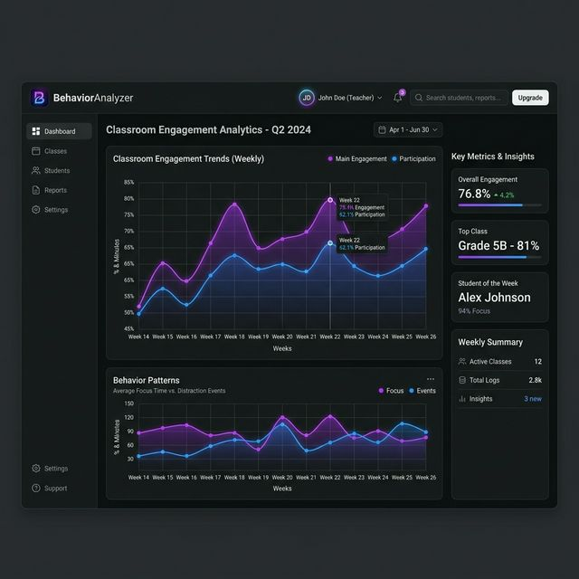

Analyze Student Behavior Before and After Class sessions
Team
Kashif Ullah
Muhammad Danish (Mashar)
Haseen Ullah
Supervisor
Dr. Asif Rahim
Dept. of Computer
Science
AWKUM
Right now, teachers can only guess how students feel by watching them manually, which is slow, limited, and often wrong.
Our project fixes this by building a smart, real-time system that reads student emotions at the start and end of a class, and shows exactly how the teaching affected them.
A before-and-after comparison tool connected with an AI Teaching Helper (Llama-3). It takes classroom emotion data and turns it into helpful, real-time tips for the teacher.
Teachers get tired and can make wrong guesses. It's very hard to know how every student in the room is feeling at the same time.
Watching 50+ students while teaching a class is just not possible. Small signs of confusion on faces go unnoticed.
Without saving data, there is no record of past classes. Teachers can't look back and see what worked and what didn't over time.
Use face detection and a trained AI model (CNN) to instantly detect 7 different emotions from a live camera.
Measure how a class went by checking how students felt when they came in and comparing it with how they felt when leaving.
Use Llama-3 with LangChain as a real-time teaching helper that gives tips based on live classroom data.
Build a full React dashboard for live tracking, and use ReportLab to create automatic PDF reports after each session.
Client Interface
Core Backend
Detection
Groq API
Storage
Face Images (48x48 Grayscale)
Emotion Types
Types: Happy, Sad, Angry, Fear, Surprise, Neutral, Disgust (Some have more data than others).
Trained using Adam optimizer (lr=0.001)
A simple number showing the overall mood of the classroom — are students happy or not?
How many students look surprised or scared. When it's high, the AI steps in to help.
Counts how many students look blank or bored. Tells the teacher it's time to switch things up.
Built with Llama-3 and LangChain.
This is not a normal chatbot. The system automatically adds live class data to every question the teacher asks, so the AI always knows what's happening in the room.
Teacher: "Students seem lost, what should I do?"
Coach: "35% of students look confused. Stop and ask them what part is unclear. Then try using a simple real-life example to explain the last topic again."

Live Dashboard (Built with React + Recharts)
Interactive AI Coach Interface
CNN Accuracy
Latency
Emotions
Anonymous
Helping Teachers Teach Better with AI.